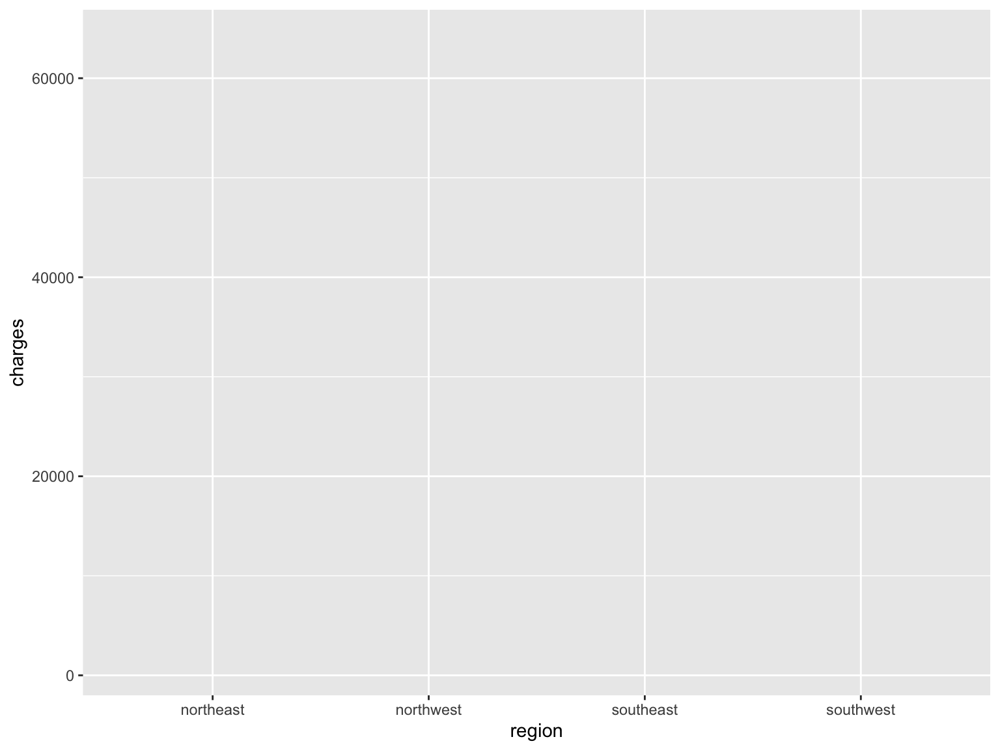
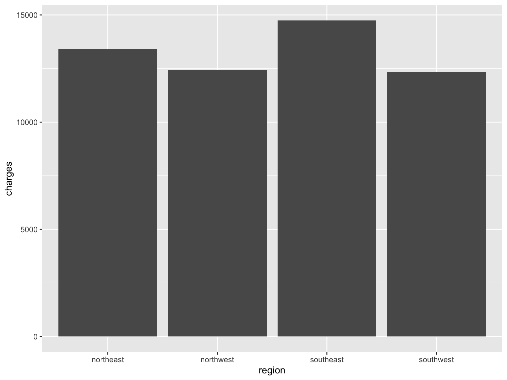
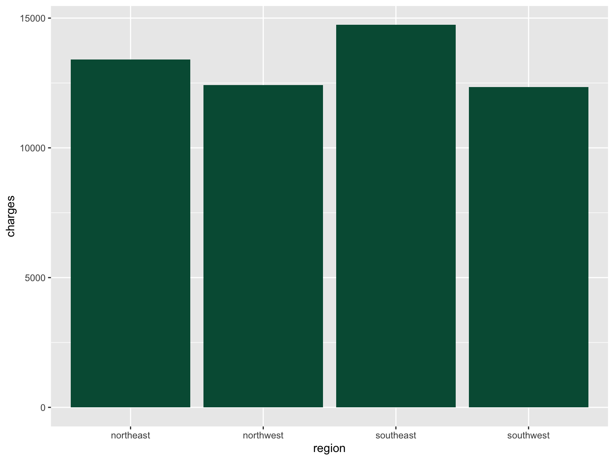
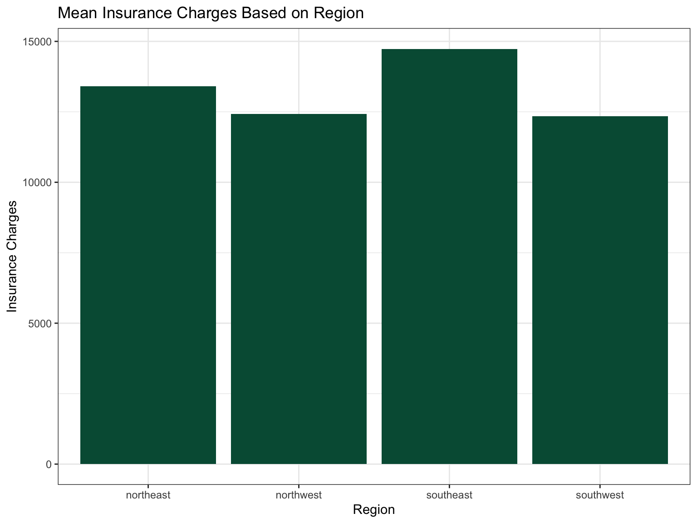
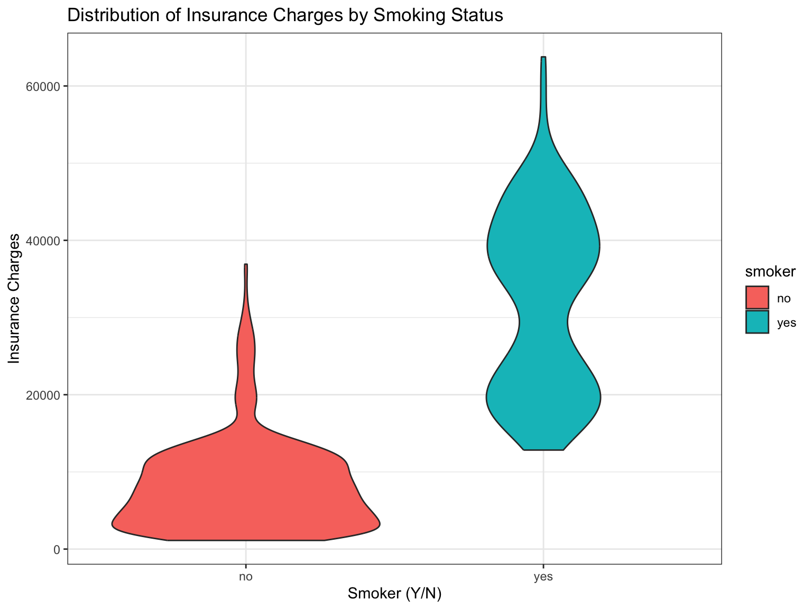
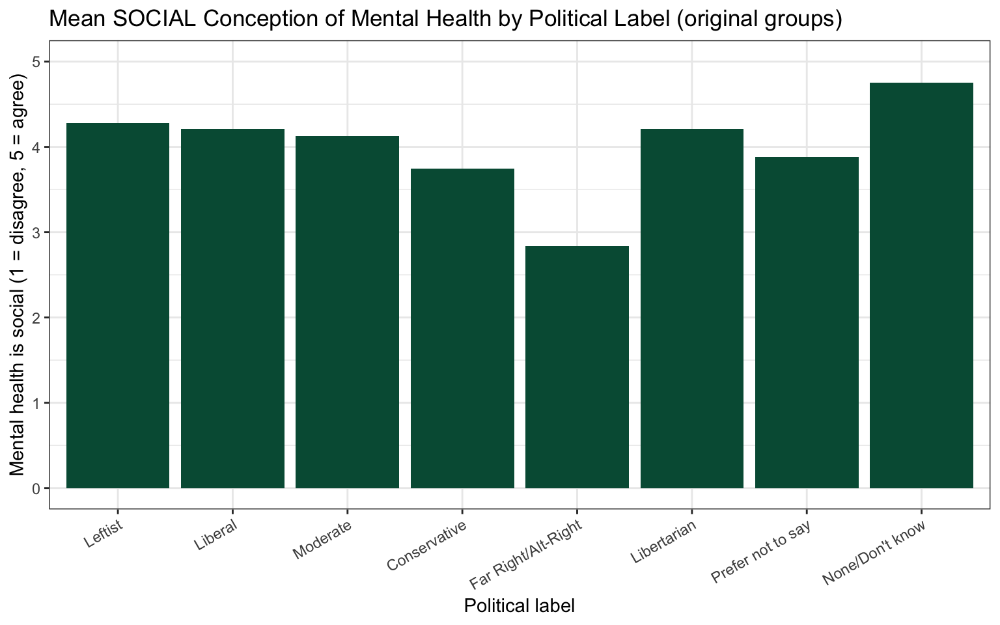
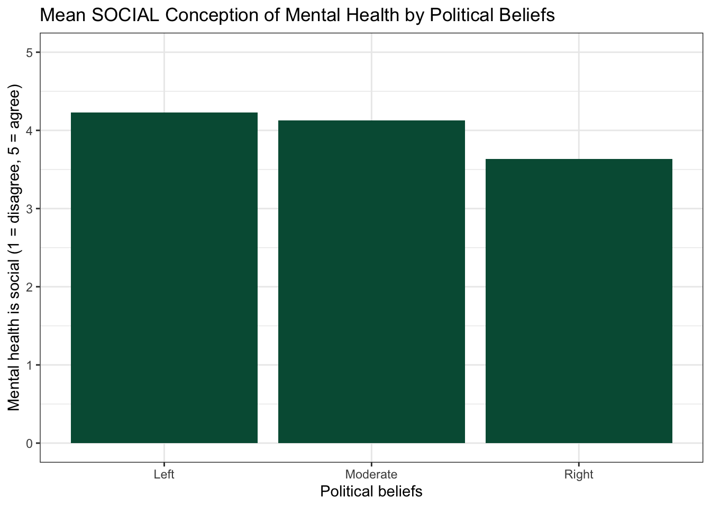

insurance <- read.csv("data/insurance.csv")16 Visualize a Comparison
How to build barplots and violin plots to compare groups
Abstract
This chapter teaches researchers to visualize comparative research questions, which examine differences in a continuous score between groups. Using real insurance data, researchers build a barplot of group means one layer at a time and see a violin plot of the same kind of data. In The Lab, researchers make a barplot with the original survey groups, then transform the groups (combine small groups, exclude answers that are not groups) to make a clearer barplot, and report what they did in the figure caption. In Your Turn, researchers use copy-ready templates and a checklist to build the comparison plot for their own research question.
Keywords
ggplot2, barplot, violin plot, comparison, case_when, factor
ResourcesResources:
ggplot2
16.1 How This Chapter Works
You will go through this chapter three times, with three different datasets.
| Pass | Section | Dataset | What you do |
|---|---|---|---|
| 1 | The Play | insurance (example) |
Watch the play. Read the code and the output, step by step. |
| 2 | The Lab | lab dataset | Run the play. Make two barplots yourself during the R Lab, then check your own work. Labs are not graded. |
| 3 | Your Turn | your team’s dataset | Call your own play. After you finish all of the R Labs, come back and make the plot for your own research question. |
GoGo: Know your route first
This chapter is the Visualize step on The Analysis Map for a comparison question: groups (a categorical variable) and one continuous score. New to ggplot2 layers? Read How Code Builds a Plot first.
16.2 📋 The Play
16.2.1 Example Data: insurance
The example dataset is from the “Medical Cost Personal Costs” database on Kaggle. For this chapter, we refer to it as insurance.
library(ggplot2)16.2.2 Comparative Research
Comparative research questions examine mean score differences on a continuous (quantitative) variable based on real or artificial (researcher-decided) group membership. Simply put, comparative research offers a way of comparing different categories to one another. These categories can be:
🏷️ Nominal Data (Gender Identity)
- Man
- Woman
- Non-Binary
📶 Ordinal Data (Age Group)
- 18 - 35
- 36 - 54
- 55 - 75
- 76+
STEP-BY-STEP TO BUILD A BARPLOT WITH geom_bar()
Bar plots are useful for comparing mean scores across groups.
Step 1: Set up data
ggplot(data = insurance)
Step 2: Set up mapping
ggplot(data = insurance,
mapping = aes(
x = region,
y = charges))
Resources📊 Layers: Data + Mapping
- Data:
insurancedataset - Mapping:
aes(x = region, y = charges)
Step 3: Add geometry (bars)
plot_region_charges <- ggplot(
data = insurance,
mapping = aes(
x = region,
y = charges)) +
geom_bar(stat = 'summary', fun = 'mean')
plot_region_charges
Resources🎨 Layer: Geometries
Geometry:
geom_bar()creates barsStatistics:
stat = 'summary', fun = 'mean'calculates means
CautionCaution: Saving a plot does not show it
plot_region_charges <- ggplot(...) saves the plot as an object in your environment. To see it, type the object’s name on its own line (or use print()), like the last line of the code above.
Step 4: Customize bars
plot_region_charges <- ggplot(
data = insurance,
mapping = aes(
x = region,
y = charges)) +
geom_bar(
stat = 'summary',
fun = 'mean',
fill = "#005a43")
plot_region_charges
Resources🎨 Layer: Theme (color)
- Setting
fill = "#005a43"customizes bar colors
Step 5: Add labels and themes
plot_region_charges <- ggplot(
data = insurance,
mapping = aes(
x = region,
y = charges)) +
geom_bar(
stat = 'summary', fun = 'mean', fill = "#005a43") +
ggtitle("Mean Insurance Charges Based on Region") +
xlab("Region") +
ylab("Insurance Charges") +
theme_bw()
plot_region_charges
Resources🎨 Layer: Theme
- Theme: Labels and
theme_bw()enhance appearance
Violin Plots with geom_violin()
Violin plots provide a different way to visualize information to capture the distribution of data for each category.
ggplot(data = insurance,
mapping = aes(
x = smoker,
y = charges,
fill = smoker)) +
geom_violin() +
ggtitle("Distribution of Insurance Charges by Smoking Status") +
xlab("Smoker (Y/N)") +
ylab("Insurance Charges") +
theme_bw()
#plot above plot without using plot = argument
ggsave("plots/plot2_smoker.png",
width = 10, height = 8, dpi = 300)To learn more about how to use violin plots for pre/post data, see the chapter on visualizing pre/post scores.
GoGo: Save your plot with
ggsave()
Every plot in your RD Report and Final Report must be saved with ggsave(), so you can add it to your team poster. Save the plot to an object, then add two lines:
ggsave("plots/plot1_clear_name.png",
plot = plot_name, width = 10, height = 8, dpi = 300)The full explanation is in How Code Builds a Plot.
16.3 🏈 The Lab
You watched the play above with the insurance dataset (Pass 1). Now run two plays yourself with the lab dataset, a survey about what people believe about mental health.

Ref’s kickoff. This lab is not graded, so I am here to help you check your own work. Try each play before you open my check or the solution. If your answer does not match, that is not a penalty. It is how you find out what to fix.
| Lab play | What is new |
|---|---|
| Sweep Left | a barplot with the original groups |
| Sweep Right | transform the groups first, then make a better barplot |
Before you start
- Open your RStudio Project and your lab
.qmdfile. - Load the clean lab data by running this chunk. It runs the cleaning script you built in the earlier labs.
source("lab_prep.R") # creates mh_clean
nrow(mh_clean) # how many people are in the clean dataset?
Go Ref’s check: how many rows?
Ref’s check: how many rows?
nrow(mh_clean) should be 188. If you get 200, you are looking at the raw data: the duplicate response and the people who failed the attention checks have not been removed yet.
16.3.1 Lab Play 1: Sweep Left (a barplot with the original groups)
Research question: Does the belief that mental health is social (SOCIAL, 1 to 5) differ by political beliefs?
The survey asked: What label best captures your political beliefs? The answers are stored as numbers in POLITICALBELIEFS.
| Code | Label |
|---|---|
| 1 | Leftist |
| 2 | Liberal |
| 3 | Moderate |
| 4 | Conservative |
| 5 | Far Right/Alt-Right |
| 6 | Libertarian |
| -99 | Prefer not to say |
| -50 | None of the above or Don’t Know |
Your task, part 1: Look at the original data first. How many people chose each answer?
mh_clean |>
count(POLITICALBELIEFS)Your task, part 2: Give the numbers their labels with factor(), then go back to the barplot play and make a barplot of the mean of SOCIAL for every group.
mh_clean <- mh_clean |>
mutate(POLITICALBELIEFS_f = factor(
POLITICALBELIEFS,
levels = c(1, 2, 3, 4, 5, 6, -99, -50),
labels = c("Leftist", "Liberal", "Moderate", "Conservative",
"Far Right/Alt-Right", "Libertarian",
"Prefer not to say", "None/Don't know")))
Go Ref’s check: how many people are behind each bar?
Ref’s check: how many people are behind each bar?
| Political label | n | Mean SOCIAL |
|---|---|---|
| Leftist | 23 | 4.28 |
| Liberal | 67 | 4.21 |
| Moderate | 26 | 4.13 |
| Conservative | 41 | 3.75 |
| Far Right/Alt-Right | 6 | 2.83 |
| Libertarian | 4 | 4.21 |
| Prefer not to say | 17 | 3.88 |
| None/Don’t know | 4 | 4.75 |
- You should see eight bars. Your counts and bar heights should match the table.
- Now be the referee of your own plot. The Libertarian bar is the average of only 4 people, so it tells you almost nothing about Libertarians. “Prefer not to say” (17) and “None/Don’t know” (4) are not political groups at all. Eight bars also make it hard to see the main pattern. Lab Play 2 fixes all three problems.
Resources👀 See the solution
plot_label_original <- ggplot(
data = mh_clean,
mapping = aes(
x = POLITICALBELIEFS_f,
y = SOCIAL)) +
geom_bar(
stat = 'summary', fun = 'mean', fill = "#005a43") +
ylim(0, 5) +
ggtitle("Mean SOCIAL Conception of Mental Health by Political Label (original groups)") +
xlab("Political label") +
ylab("Mental health is social (1 = disagree, 5 = agree)") +
theme_bw() +
theme(axis.text.x = element_text(angle = 30, hjust = 1))
print(plot_label_original)
16.3.2 Lab Play 2: Sweep Right (transform the groups, then a barplot)
Researchers often combine small groups into larger ones and exclude answers that are not groups. This is a decision you make, so you must tell your reader exactly what you did.
Your task, part 1: Transform POLITICALBELIEFS into a new variable with three groups.
- Left = Leftist (1) or Liberal (2)
- Moderate = Moderate (3)
- Right = Conservative (4) or Far Right/Alt-Right (5)
- Exclude Libertarian (6) because only 4 people chose it, and exclude “Prefer not to say” (-99) and “None of the above or Don’t Know” (-50).
mh_clean <- mh_clean |>
mutate(POL_LMR = case_when(
POLITICALBELIEFS %in% c(1, 2) ~ "Left",
POLITICALBELIEFS == 3 ~ "Moderate",
POLITICALBELIEFS %in% c(4, 5) ~ "Right")) # every other answer becomes NA (missing)
# ALWAYS check a transformation: did every answer go where you wanted?
mh_clean |>
count(POLITICALBELIEFS, POL_LMR)
# keep only the people who are in one of the three groups
mh_lmr <- mh_clean |>
filter(!is.na(POL_LMR))Your task, part 2: Make the barplot again with mh_lmr and POL_LMR. Write a figure caption that tells the reader how the groups were made and how many people were excluded, with the counts.
Caution Foul:
Foul:
Foul: == 1 | 2 does not mean “1 or 2”
POLITICALBELIEFS == 1 | 2 looks right, but R reads it in a way that puts everyone in the first group. To say “is one of these values”, use %in%, like this: POLITICALBELIEFS %in% c(1, 2). The count(POLITICALBELIEFS, POL_LMR) check will catch this foul for you.
Go Ref’s check: did your transformation work?
Ref’s check: did your transformation work?
| Political beliefs | n | Mean SOCIAL |
|---|---|---|
| Left | 90 | 4.23 |
| Moderate | 26 | 4.13 |
| Right | 47 | 3.63 |
mh_lmrshould have 163 people. You excluded 25: 4 Libertarian, 17 “Prefer not to say”, and 4 “None of the above or Don’t Know”.- You should see exactly three bars, and the counts and bar heights should match the table.
- Tallest bar: Left. Shortest bar: Right. The pattern is much easier to see with three bars than with eight. You will learn to test whether this difference is statistically significant later in this part of the playbook (Compare Groups).
Resources👀 See the solution
plot_label_lmr <- ggplot(
data = mh_lmr,
mapping = aes(
x = POL_LMR,
y = SOCIAL)) +
geom_bar(
stat = 'summary', fun = 'mean', fill = "#005a43") +
ylim(0, 5) +
ggtitle("Mean SOCIAL Conception of Mental Health by Political Beliefs") +
xlab("Political beliefs") +
ylab("Mental health is social (1 = disagree, 5 = agree)") +
theme_bw()
print(plot_label_lmr)
Caution Ref’s call: fouls to check if your plot does not match
Ref’s call: fouls to check if your plot does not match
- Bars in strange places with numbers on the x axis → you plotted
POLITICALBELIEFS(numbers). PlotPOLITICALBELIEFS_f(the factor with labels). - A bar labeled
NAin Lab Play 2 → you plottedmh_cleanwhen you meantmh_lmr, or you skipped thefilter(!is.na(POL_LMR))step. - Everyone is in the “Left” group → you wrote
== 1 | 2. Use%in% c(1, 2). - An error that mentions
stat_count()→ you left outstat = 'summary', fun = 'mean'insidegeom_bar(). Without it,geom_bar()tries to count people when you want it to show each group’s average. object 'SOCIAL' not found→SOCIALis a composite created inlab_prep.R. Runsource("lab_prep.R")first.- An error that mentions
+→ each ggplot line must end with+. A line that starts with+breaks the plot.
Ref’s final whistle. That is the end of the lab. Save your .qmd, render it, and back up your .qmd and .R files to the R Labs folder in your ELN before you quit RStudio.
16.4 🏆 Your Turn
Once you finish all of the R Labs, come back here with your team’s dataset and make the plot for your comparison research question.
16.4.1 The comparison play
yourdata_groups <- yourdata |> # REPLACE with your clean dataset
filter(!is.na(GROUPVARIABLE)) # REPLACE with your grouping variable
plot_REPLACE <- ggplot( # REPLACE the plot name
data = yourdata_groups,
mapping = aes(
x = GROUPVARIABLE, # REPLACE with your grouping variable
y = OUTCOME)) + # REPLACE with your continuous outcome
geom_bar(
stat = 'summary', fun = 'mean', fill = "#005a43") +
ggtitle("REPLACE with your title") +
xlab("REPLACE with a plain-words label") +
ylab("REPLACE with a plain-words label and the scale range") +
theme_bw()
print(plot_REPLACE)
ggsave("plots/REPLACE.png", # REPLACE with a clear file name
plot = plot_REPLACE,
width = 10, height = 8, dpi = 300)16.4.2 If you need to combine or exclude groups first
Do this before the comparison play above, then use your new dataset and your new grouping variable in the barplot.
yourdata <- yourdata |> # REPLACE with your clean dataset
mutate(NEWGROUP = case_when( # REPLACE NEWGROUP with a name for your new variable
GROUPVARIABLE %in% c(1, 2) ~ "REPLACE", # REPLACE the codes and the label for group 1
GROUPVARIABLE == 3 ~ "REPLACE", # REPLACE the code and the label for group 2
GROUPVARIABLE %in% c(4, 5) ~ "REPLACE"))# REPLACE the codes and the label for group 3
# every answer you leave out becomes NA (missing)
yourdata |>
count(GROUPVARIABLE, NEWGROUP) # check: did every answer go where you wanted?
yourdata_groups <- yourdata |>
filter(!is.na(NEWGROUP)) # keep only people who are in one of your groupsIn your figure caption, tell the reader which answers you combined, which answers you excluded, and how many people were excluded (for example, “Excluded: Libertarian (n = 4)”).
16.4.3 Checklist for your RD Report and Final Report
ResourcesOpen the plot checklist
| Criteria | Ask yourself |
|---|---|
| Data and mapping | Is the cleaned dataset used, with the correct variables on x and y? |
| Geometry | Is this the best plot for the data (e.g., scatterplot for two continuous variables; barplot or boxplot for groups)? |
| Stacked points | If points sit on top of each other, are they jittered, and does the caption say so? |
| Groups | Were very small groups combined or excluded? Does the caption say what was combined or excluded, with the counts? |
| Stats | Is there a line of best fit on a scatterplot? Are there error bars on a barplot? (Error bars are required in the Final Report, not the RD Report.) |
| Axes and labels | Are both axes labeled in plain words (not variable names)? Does each axis cover the full range of the scale? |
| Facets | Would a facet (one panel per group) help answer your research question? |
| Appearance | Is there an accurate title? Is a non-default theme used (the same theme in every plot)? Does color add meaning? |
| Code formatting | Can you read the code without scrolling to the right? Does the plot print without errors or extra output? |
| Figure caption | Does the chunk have fig-cap, starting with “Figure 1.”, “Figure 2.”, and enough detail to stand alone? |
| Alt text | Does the chunk have fig-alt that describes what the plot shows? |
| ggsave( ) | Is the plot saved with ggsave() into the plots folder of your RStudio Project, with a clear file name? |
| Stands alone | Could a reader understand the figure without reading your text? |
| Referenced in text | Does your results paragraph point to it (e.g., “Figure 1 shows the association between …”)? |